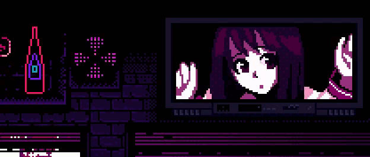
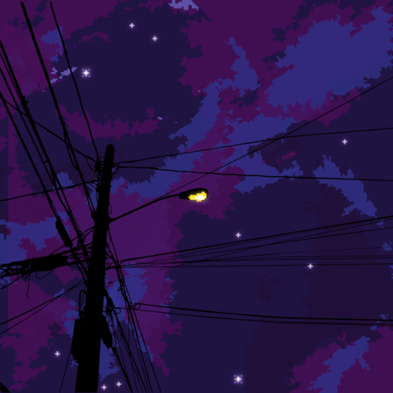
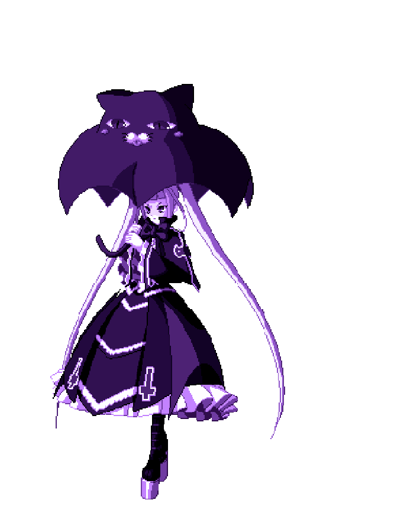

error_girl.exe

lamp.exe
Voltar.exe

System_Error // Blitz
_
[]
X
𝟡𝕃𝕒𝕟𝕒 - ℙ𝕣𝕠𝕡𝕠𝕤𝕖 🎵
_
[]
X
𝔨𝔦𝔪𝔦 𝔴𝔞 𝔷𝔲𝔯𝔲𝔦 𝔷𝔲𝔯𝔲𝔦 ずるい ずるい ずるい 人だ もう 𝔷𝔲𝔯𝔲𝔦 𝔷𝔲𝔯𝔲𝔦 𝔷𝔲𝔯𝔲𝔦 𝔥𝔦𝔱𝔬 𝔡𝔞 𝔪𝔬𝔲 わがままな君の中で 𝔴𝔞𝔤𝔞𝔪𝔞𝔪𝔞 𝔫𝔞 𝔨𝔦𝔪𝔦 𝔫𝔬 𝔫𝔞𝔨𝔞 𝔡𝔢 綺麗に腐った罰 𝔨𝔦𝔯𝔢𝔦 𝔫𝔦 𝔨𝔲𝔰𝔞𝔱𝔱𝔞 𝔟𝔞𝔱𝔰𝔲 聞いて 聞いて 聞いて 𝔨𝔦𝔦𝔱𝔢 𝔨𝔦𝔦𝔱𝔢 𝔨𝔦𝔦𝔱𝔢 聞いて 聞いて 聞いてよ 𝔨𝔦𝔦𝔱𝔢 𝔨𝔦𝔦𝔱𝔢 𝔨𝔦𝔦𝔱𝔢 𝔶𝔬 お願い 優しく抱いて 𝔬𝔫𝔢𝔤𝔞𝔦 𝔶𝔞𝔰𝔞𝔰𝔥𝔦𝔨𝔲 𝔡𝔞𝔦𝔱𝔢 優しく抱いて 優しく抱いて 𝔶𝔞𝔰𝔞𝔰𝔥𝔦𝔨𝔲 𝔡𝔞𝔦𝔱𝔢 𝔶𝔞𝔰𝔞𝔰𝔥𝔦𝔨𝔲 𝔡𝔞𝔦𝔱𝔢..
𝕙𝕖𝕪 𝕃𝕚𝕥𝕥𝕝𝕖 𝕘𝕚𝕣𝕝
_
[]
X
𝚃𝚊𝚔𝚎 𝚖𝚎 𝚑𝚘𝚖𝚎, 𝚑𝚘𝚖𝚎, 𝚑𝚘𝚖𝚎 𝙶𝚒𝚟𝚎 𝚖𝚎 𝚝𝚑𝚊𝚝 𝚙𝚒𝚗𝚔 𝚜𝚕𝚒𝚙 𝚘𝚏 𝚙𝚎𝚛𝚖𝚒𝚜𝚜𝚒𝚘𝚗 𝚃𝚑𝚒𝚜 𝚒𝚜 𝚘𝚕𝚍, 𝚘𝚕𝚍, 𝚘𝚕𝚍 𝙸'𝚖 𝚝𝚒𝚛𝚎𝚍 𝚘𝚏 𝚠𝚒𝚜𝚑𝚒𝚗𝚐 𝙸 𝚠𝚊𝚜 𝚍𝚒𝚝𝚌𝚑𝚒𝚗𝚐 𝙷𝚘𝚖𝚎, 𝚑𝚘𝚖𝚎, 𝚑𝚘𝚖𝚎 𝙾𝚕𝚍, 𝚘𝚕𝚍, 𝚘𝚕𝚍
Get Jinxed // Jinx
_
[]
X